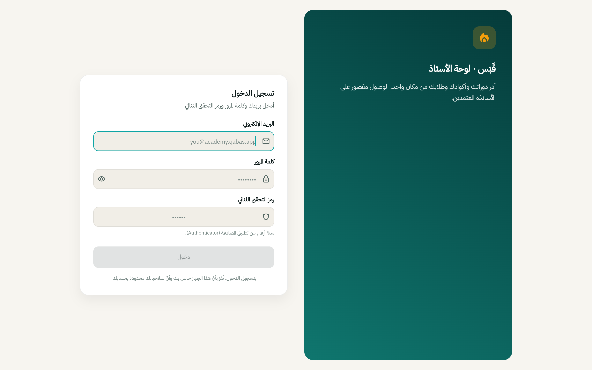

منصّة تعليم إلكتروني SaaS متكاملة متعدّدة المستأجرين للمعلّمين في العراق: backend، وتطبيق طالب، ولوحتا مدرّس ومشرف، وموقع تعريفي، وبنية تحتية مُعرَّفة بالكود. A complete multi-tenant e-learning SaaS for educators in Iraq — backend, student app, instructor & admin panels, marketing site, and infrastructure as code.
قبس منصّة تعليم SaaS متعدّدة المستأجرين تستهدف المعلّمين في العراق، تتوزّع على ستّ وحدات: (1) backend — FastAPI بـ ~103 endpoint REST و39 خدمة؛ (2) تطبيق موبايل — تطبيق طالب كامل بـ Flutter (تشغيل فيديو، محادثة مدرّس ذكي، منتدى، تلعيب، رسائل، إشعارات)؛ (3) لوحة المدرّس — Flutter Web (إدارة الدورات والدروس، مولّد أكواد التفعيل، رفع الفيديو، إدارة المنتدى، البثّ)؛ (4) لوحة المشرف — Flutter Web (حسابات المدرّسين، الفواتير، لوحات استهلاك الذكاء الاصطناعي، الإشراف)؛ (5) الموقع — موقع تعريفي بـ Astro (ثنائي اللغة، RTL)؛ (6) البنية التحتية — Terraform (مشاريع GCP، Firebase، Cloud Run، Secret Manager، Artifact Registry). A multi-tenant education SaaS targeting educators in Iraq, built across SIX modules: (1) backend — FastAPI, ~103 REST endpoints, 39 services; (2) mobile — a full Flutter student app (video playback, AI tutor chat, forum, gamification, messaging, notifications); (3) instructor panel — Flutter Web (course/lesson management, activation-code generator, video upload, forum moderation, broadcasts); (4) admin panel — Flutter Web (instructor accounts, invoices, AI-usage dashboards, moderation); (5) website — Astro marketing site (bilingual, RTL); (6) infra — Terraform (GCP projects, Firebase, Cloud Run, Secret Manager, Artifact Registry).
يعتمد نموذج العمل على أكواد التفعيل بدل الدفع المباشر؛ بما يناسب اقتصاد العراق النقدي. وللإنصاف: الكود مكتمل والـ backend مُختبَر جيّداً، لكنّه غير منشور بعد عن قصد (الـ Terraform مُتحقَّق منه محليّاً ولم يُطبَّق على مشروع GCP حيّ). The business model uses activation codes instead of direct payment — suited to Iraq's cash economy. Honest note: the code is complete and the backend is well-tested, but it is intentionally not yet deployed (Terraform is locally validated, not applied).
* المنصّة غير منشورة بعد؛ الأرقام مأخوذة من الكود والاختبارات المحليّة. * The platform is not yet deployed; figures are taken from the code and local tests.
لقطات حقيقية للوحتَي الويب (Flutter Web): تسجيل دخول بالبريد وكلمة المرور مع تحقّق ثنائي (2FA)Real screenshots of the two web panels (Flutter Web) — email/password sign-in with 2FA

عزل بين المستأجرين بدفاع متعدّد الطبقات، وتطوير يبدأ محليّاً (emulators + mocks)Multi-tenant isolation with defense in depth + local-first dev (emulators + mocks)
// multi-tenant EdTech SaaS · 6 modules Mobile (Flutter) ─┐ Admin (Flutter Web) ─┼──▶ /api/v1 REST ──▶ Cloudflare ──▶ Cloud Run Instructor (Flutter Web) ─┘ │ FastAPI backend · 26 routers in api/v1 │ ┌───────────────┬─────────────┬──────────────┼──────────────┐ ▼ ▼ ▼ ▼ ▼ Firestore Redis Bunny.net Gemini Secret Manager (Native, nam5) (cache/limit) (video/DRM) (AI/SSE) · Artifact Reg. Multi-tenancy: every Firestore doc carries instructorId/schoolId → every service verifies ownership BEFORE read/write → PLUS Firestore Rules on web clients = defense in depth Local-first dev: Firebase Emulator + mocked Bunny/Gemini → zero GCP creds needed to run the whole platform
قواعد Firestore (على العميل) + فحوصات ملكيّة في طبقة الخدمات بالـ backend؛ لا تسرّب لبيانات بين المستأجرين.Firestore Rules (client) + backend service-layer ownership checks; no cross-tenant data leakage.
توليد / تحقّق / استهلاك الأكواد مع سجلّ كامل (ledger)؛ يناسب سوقاً نادر فيه الدفع بالبطاقات.Generate / validate / consume codes with a full ledger; fits a market where card payments are uncommon.
يشاهد الطلاب المدرّس وهو يولّد أسئلة الاختبارات والملخّصات والشروح في الوقت الحقيقي، مع بحث متّجهي في محتوى الدورة، وتراجُع إلى mock عند تعذّر Gemini.Students watch the tutor generate quiz questions, summaries, and explanations in real time; vector search over course content; mock fallback when Gemini is unavailable.
Bunny.net Stream مع Widevine (أندرويد) / FairPlay (iOS)، ورموز تشغيل من الخادم، وتشغيل أصلي عبر ExoPlayer/AVPlayer بواسطة better_player_plus.Bunny.net Stream with Widevine (Android) / FairPlay (iOS); server-side playback tokens; native ExoPlayer/AVPlayer playback via better_player_plus.
معرّف تطبيق أندرويد خاصّ بكلّ مدرسة عبر Flutter flavors، ونسخة iOS واحدة تحدّد كود المدرسة عند أوّل تشغيل؛ قاعدة كود واحدة بثلاث استراتيجيات نشر.Android per-school app IDs via Flutter flavors; iOS single binary with a school-code resolver at first launch; one codebase, three deploy strategies.
العربية هي اللغة الافتراضية مع RTL وأرقام عربية-هندية (١٢٣)، مع إمكان التبديل إلى الإنجليزية، باتّساق بين الموبايل ولوحات الويب ورسائل أخطاء الـ backend.Arabic-native default with RTL and Arabic-Indic digits (١٢٣), English toggle; consistent across mobile, web panels, and backend error messages.
| Backend | FastAPI 0.115 · Python 3.12 · uvicorn · Pydantic v2 |
| قاعدة البياناتDatabase | Firestore (Native, nam5 متعدّد المناطق)(Native, nam5 multi-region) · Firestore Rules |
| المصادقةAuth | Firebase Auth (OTP) + JWT custom claims (role · instructorId)custom claims (role · instructorId) |
| التخزين المؤقّت/الحدّCache / Limit | Redis 7 (Cloud Memorystore) |
| الفيديوVideo | Bunny.net Stream · Widevine/FairPlay DRM · HLS (better_player_plus) |
| الذكاء الاصطناعيAI | Google Gemini (Flash/Pro) عبر genai SDK · بثّ SSEvia genai SDK · streaming SSE |
| Mobile | Flutter 3.27 (Riverpod 2.6 · go_router · Drift · flutter_secure_storage) |
| لوحات الويبWeb panels | Flutter Web (نفس قاعدة الكود)(same codebase) |
| الموقعWebsite | Astro 4 · Tailwind · TypeScript · i18n |
| البنية التحتيةInfra | Terraform 1.6 (Cloud Run · Workload Identity · Secret Manager · Artifact Registry) |
| CI/CD | GitHub Actions (pytest · ruff · mypy · bandit · gitleaks) · Docker (متعدّد المراحل، non-root)(multi-stage, non-root) |